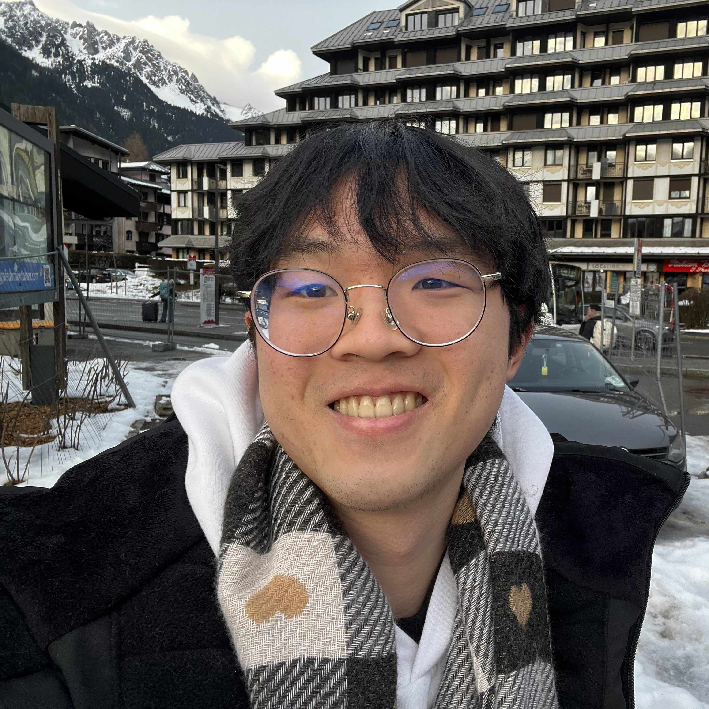

Whang Shih Ee
MEng Engineering · University of Cambridge · IMDA Scholar
Engineer at Cambridge (Lucy Cavendish College) interested in AI safety and robotics.
Currently researching LLM generalisation under finetuning through SPAR.
Featured Projects
🧠
🤖
🏗️
Awards
-
Silver
Asian Physics Olympiad 2021Placed 33rd globally, 2nd in Singapore
-
Gold
Singapore Physics Olympiad 2020Placed top 28 nationally
AI Safety
🧠
🛡️
⚙️
Robotics & Engineering
🤖
🏗️
📡
✈️
Research & Science
🔬
🚗
☀️
Essays on whatever.
Timeline
Scan left-to-right to see what was happening at once, or follow a column to trace one thread.
Education
Work & Service
Projects & Research
Education
Work
Projects
2025–26
Cambridge, Year 2
MEng Information Engineering
Top 4% of cohort. Signal processing, control systems, AI/ML, mathematics.
Fabrica AI
Software Engineering Intern · Jul–Sep 2025
LiDAR mapping system, ROS 2, Docker. Automated construction robots.
SPAR Research
Feb 2026 – Present
LLM generalisation under finetuning. Literature review, experiments, result analysis.
IDP Robot — 🥇 1st Place
Integrated Design Project · 2026
Software lead & PM across 6-person team. Simulation, test suite, visualiser. Built from scratch.
2024
Cambridge, Year 1
MEng Information Engineering
Engineering foundations, electronics, maths, programming.
DSTA Engineering Intern
Apr – Sep 2024
Drone countermeasures. Improved video transmission (+30% fps, −75% bandwidth). Network architecture migration.
DSO Research Intern
Jan – Mar 2024
Novel image embedding generation from small datasets. Python, NumPy.
CAISH Fellowship & Alignment Desk
Oct 2024 – Dec 2025
6-week alignment fellowship. 2 written posts on AI safety evaluations.
ARBOx Bootcamp
Oxford · Jan 2025
2-week technical bootcamp: transformers, RL, mechanistic interpretability.
2022–23
Republic of Singapore Air Force
Aircraft Technician · Mar 2022 – Nov 2023
Serviced F-16s for daily training flights. Operational Airman of the Month (Jun 2023). Selected for multiple overseas assignments.
2020–21
NUS High School
Diploma · 4.9/5.0 GPA
Principal's List (top 5%). CS (A*), Physics (A*), Maths (A*), Chemistry (A*).
NIE Research Intern
National Institute of Education · Jun 2020 – Jun 2021
Dye-sensitised solar cell research with Prof. Tsao Hoi Nok. Research paper and poster.
Asian Physics Olympiad
2021 · Silver
33rd globally, 2nd in Singapore.
2018–19
NUS High School
Early years
Singapore Junior Physics & Chemistry Olympiads (Gold, 2 consecutive years).
DSTA Research Intern
Oct – Dec 2018
Aerial vehicle classification model. Selected to present at 2019 NUSH Research Congress.